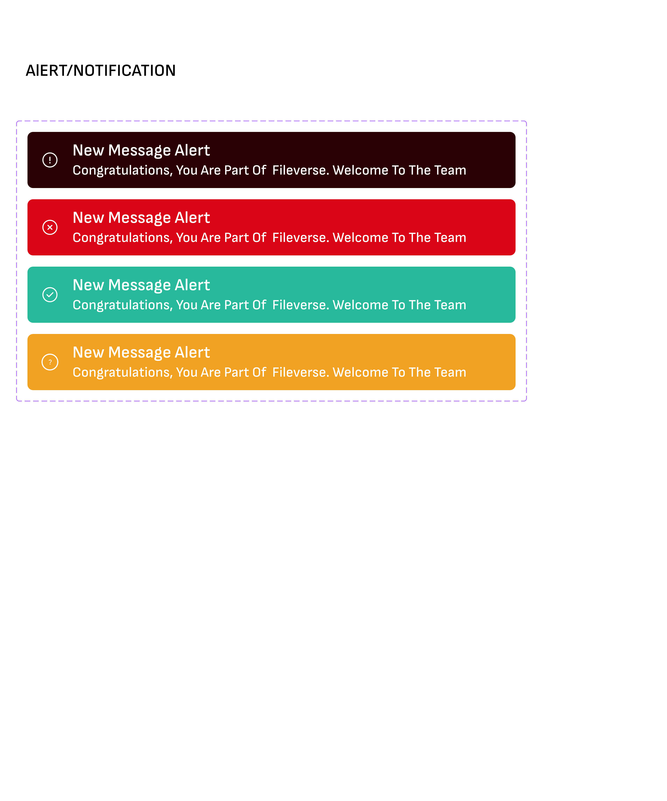

Design System
Design Components
Key UI components that form the foundation of the SomaGift design system

Notifications

Input Fields

Primary Button

Secondary Button
SomaGift is a multi-channel gifting platform designed to help users discover, customize, pay for, and deliver gifts seamlessly whether virtual, physical, or Web3-based. The platform supports individual gifting, group gifting, giveaways, and campaign-based gifting, making it suitable for personal use, brands, and large-scale initiatives.
Project Overview: The challenge was to design a single experience that could handle high product variety, complex delivery options, multiple payment methods, and different user intents, without overwhelming users.
Gift-giving is emotionally driven but often operationally complex. Through early discovery, we identified several pain points:
The opportunity was to design a clear, guided, and flexible gifting experience that scales from a single birthday gift to large public giveaways.
I worked with stakeholders to identify core user groups and conducted a comprehensive research process:
Core user groups identified:
Research methods included:
Based on research insights, the design focused on clarity, flexibility, and user guidance.
I designed a high-level structure that reduced complexity:
Each category had tailored flows, visuals, and customization options, instead of forcing one generic experience.
This helped users move from "I don't know what to buy" to "This feels right" faster.
Users could personalize gifts with:
I used progressive disclosure so users only saw advanced options when they wanted them.
The checkout experience supported:
A unified cart system with clear summaries reduced confusion and errors.
I helped design a checkout flow supporting:
Clear confirmation states and receipts increased user confidence.
This significantly reduced "Where is my gift?" support requests.
Inspired by social giveaway patterns, I designed:
This added a fun, viral layer to gifting for campaigns and promotions.
This helped reduce early drop-offs and improved confidence.
Improved task completion rates through simplified payment flows and clearer checkout processes.
Higher conversion rates after simplifying payment flows and reducing user confusion.
Better delivery visibility and tracking reduced "Where is my gift?" inquiries significantly.
Clearer structure and guidance led to higher user satisfaction and confidence in the platform.
Enabled scalable gifting—from one-to-one gifts to large campaigns, making the platform versatile for personal use, brands, and large-scale initiatives.
Key UI components that form the foundation of the SomaGift design system

Notifications
Input Fields
Primary Button
Secondary Button
A selection of key screens showcasing the user experience across different features and user flows

SomaGift Screens
SomaGift was one of the most complex UX projects I have worked on because it required balancing emotional decision-making with operational complexity. The biggest lesson was learning how to design flexibility without overwhelming users.
By grounding decisions in user behavior, simplifying flows, and introducing playfulness where it mattered, we created an experience that feels powerful yet approachable.
For convenience, you can explore the prototype by clicking the link below to access the interactions.
View Figma Prototype